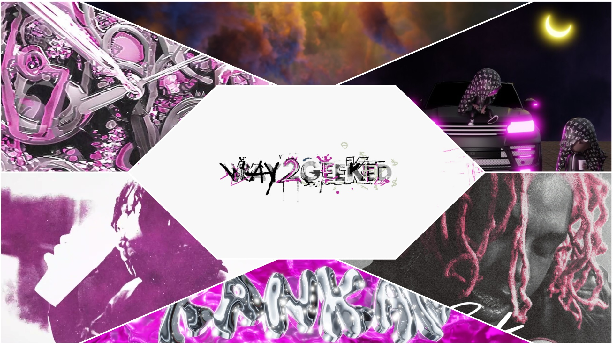
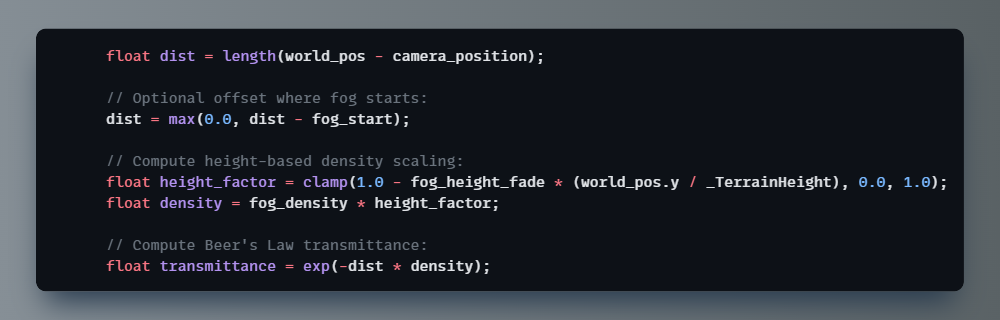
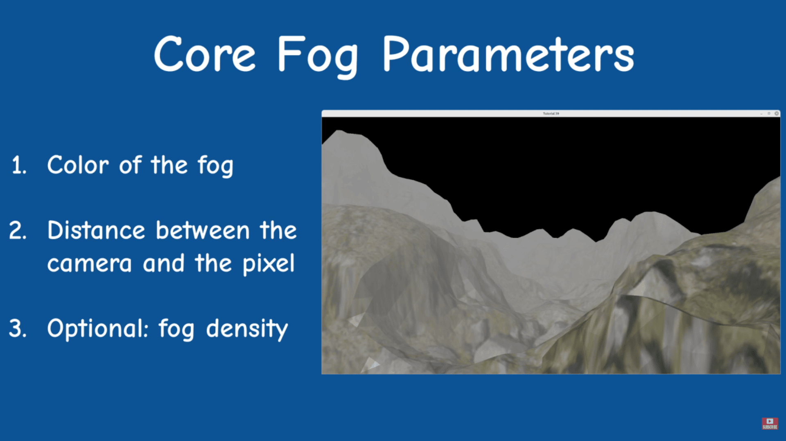
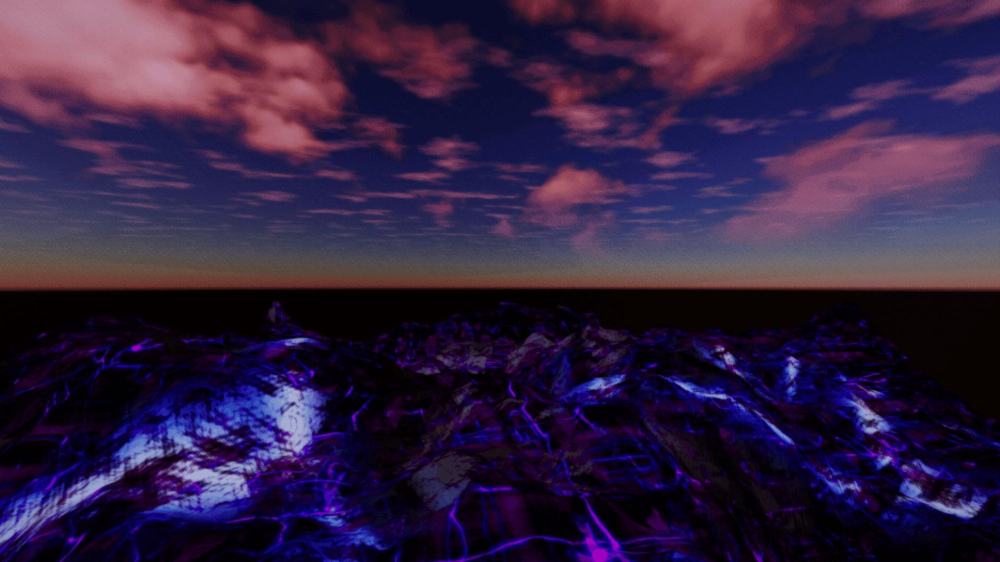

Project Status: Finished
Project Type: Game jam
Project Duration: 21 Days
Software Used: Godot 4
Plugins Used: Sky3D
Languages: GDScript, GDShader, GLSL
The Dirt Jam is a month-long community event run by Acerola to encourage participants to get started learning graphics and shader programming. Due to the low-level nature of Godot compositor effects, you get to explore rendering concepts hands-on without the safety net of fully featured commercial engines.
Final Product Visual
Way2Terrain began as my entry for Dirt Jam — a chance to push Godot's low-level rendering and see how far I could take a terrain system in just 21 days. The goal wasn’t to make a game, but to treat the project as both a technical playground and a creative statement.

Mood board
Engines like Unity and Unreal come with mature terrain systems and polished shader workflows. Godot doesn’t — which made this an ideal challenge. From building a modular shader include system, to fixing fog blending issues, to getting triplanar texturing working with mixed texture resolutions, most of the work was about recreating conveniences we take for granted in bigger engines.
Beer's Law in Action

Beer's Law:
The relationship between the absorption of light and its path length.
world_pos is the pixel's world position; _TerrainHeight is the max terrain Y.

Fog theory in ~30 seconds: key differences between linear and exponential. Links the math to actual shader code. Full video
This project taught me more about rendering pipelines, Vulkan’s API, compositor effects, and memory layouts than I expected going in.
My favorite takeaway was figuring out GPU alignment — and coming up with an analogy to understand it mid-project:
“Think of UBO memory like an inventory grid.
Each data type has its own slot size, and a row can only hold 4 slots.
Bigger items (like vec3 and vec4) get VIP spots at the start of the row,
and smaller items fill in the gaps.
If the order changes on the CPU side, you have to re-pack the layout to match on the GPU side.”

Fun Fact: Way2Terrain's logo is based off this screenshot. See?
For the full technical deep dives — from fog math to water shaders — check the closed pull requests on GitHub. They cover feature breakdowns, bug fixes, and shader logic in more detail than I could fit here.